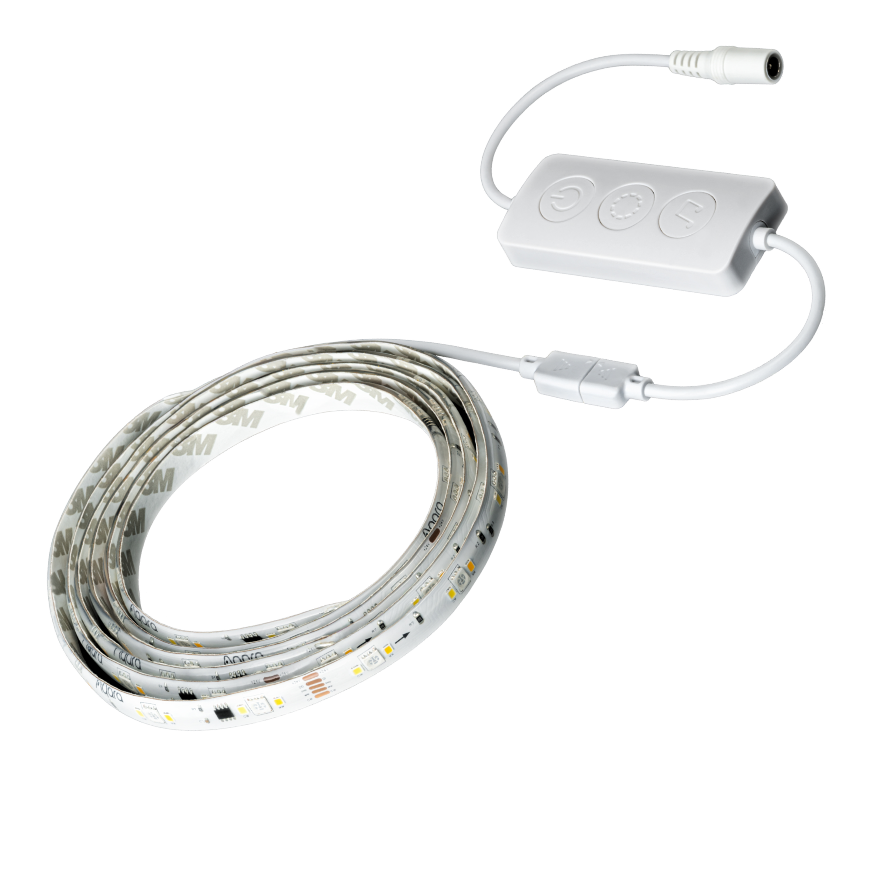

Vibration Sensor T1
- The Aqara Vibration Sensor T1 detects tilt, vibration, and drops, triggers instant alerts, automations, and supports Apple Home, Google Home, and Alexa.
Histroic Data Capture |
No Tools Needed |
Real Time Alerts |
Two-Year Battery Life |

Product Info
Description
Discover the Aqara Vibration Sensor T1 — a sleek, compact guardian for your home. Equipped with a precision accelerometer, it detects vibrations, tilts and drops swiftly and accurately, sending instant alerts via your hub or smart device to keep you informed wherever you are.
Tailor it to suit your environment with high, medium or low sensitivity and set detection intervals from 1 to 10 seconds to minimise false alarms and ensure smart reliability.
Enjoy seamless smart living with triple-tap control — simply tap three times on the installation surface to activate pre-set automations like lighting or home mode.
Built for longevity, the sensor runs on two CR2032 batteries via Zigbee 3.0 and supports Matter over bridge connectivity. Expect up to two years of battery life, plus OTA updates for future-proof functionality.
Its compact design blends effortlessly into any décor, offering intuitive, reliable protection for your belongings — without compromise.
Key Features
- Precise Detection with Instant Alerts: Detects abnormal events such as movement, tilt, or falls. The sensor immediately triggers a local alarm via the hub and sends push notifications to your phone, keeping you informed and your belongings safe..
- Customizable Sensitivity Levels: Adjust the sensor’s sensitivity to high, medium, or low, with detection intervals from 1 to 10 seconds. Whether it’s a jewellery box needing precise monitoring or a locker requiring basic protection, the settings reduce false alarms and ensure reliable protection.
- Triple Tap Automation: Simply tap three times on the sensor to activate preset smart scenes, like turning on lights, ringing the doorbell, or starting home mode. No phone or voice commands required—automation becomes effortless and fun.
- Matter over Bridge Support¹: Supports Matter over Bridge, allowing seamless connection to major platforms such as Apple Home, Google Home, Amazon Alexa, and more. Link and manage your smart home devices easily for a smoother, more flexible experience.
- Long-Lasting Battery: Powered by 2 CR2032 batteries and using Zigbee 3.0, the sensor offers up to two years of battery life, minimising maintenance and ensuring efficient, low-power performance.
Note:
* To use with a Matter ecosystem, a Matter Controller and a Matter-compatible Aqara hub are required.
Specifications
| Model | VB-S01D |
| Colour | White |
| Dimensions | 36 × 36 × 9 mm (1.42 × 1.42 × 0.35 in.) |
| Operating Temperature | -10 °C ~ 50 °C (14 °F ~ 122 °F) |
| Operating Humidity | 0 - 95%RH, no condensation |
| Wireless Protocols | Zigbee 3.0 |
| What's in the Box | Vibration Sensor T1 × 1, Sticker × 1, User Manual × 2 |
Automations and Complementary Products
Click a product image to go to its page details
Scene: Protect your property:
Keep your home or office secure. When the Vibration Sensor T1 detects movement, it blinks LED Strip Lights T1 red, arms the alarm, and sends a notification to your phone—instant alerts for peace of mind.
| Required Automation Products: | Vibration Sensor T1 |
 Hub M3 |
 LED Strip Lights T1 |
Automation Setup
IF (Condition) – Vibration Sensor is triggered // THEN (Action) – Camera E1 Turns to the pre-defined position and Records video
Scene: Nighttime Convenience
Make your workspace effortless. A triple tap on the Vibration Sensor T1 instantly turns your desk light on or off, no phone or voice commands needed—smart, simple, and intuitive.
| Required Automation Products: | Vibration Sensor T1 |
Hub M3 |
 LED Bulb T1 |
Automation Setup
IF (Condition) – Vibration Sensor T1 is triple-tapped // THEN (Action): Toggle LED Bulb T1 power on/off // Execution Rule: Execute instantly
Product Support Documents
- Step by step installation instruction video:
Installation Video (00:02:21) - Product User Manual:
User Manual (PDF) - Product FAQs:
Frequently Asked Questions (PDF)